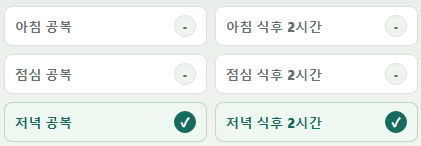
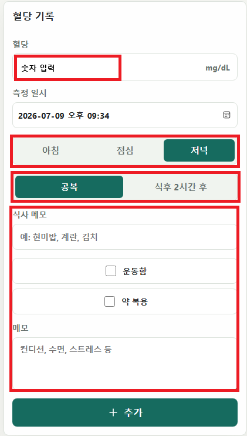
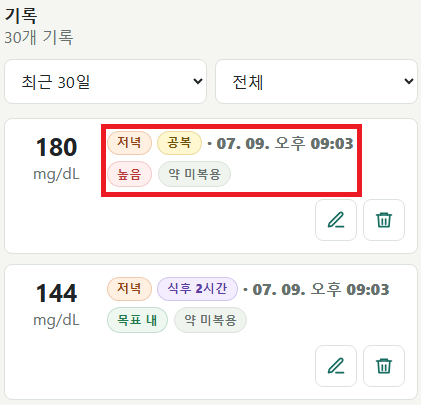
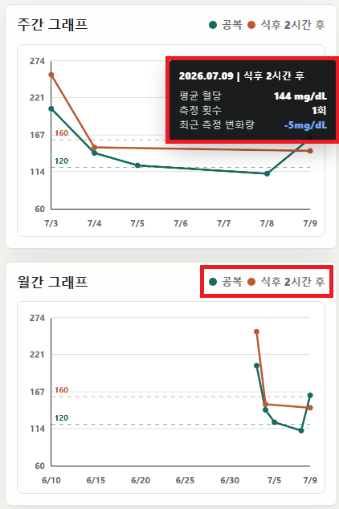
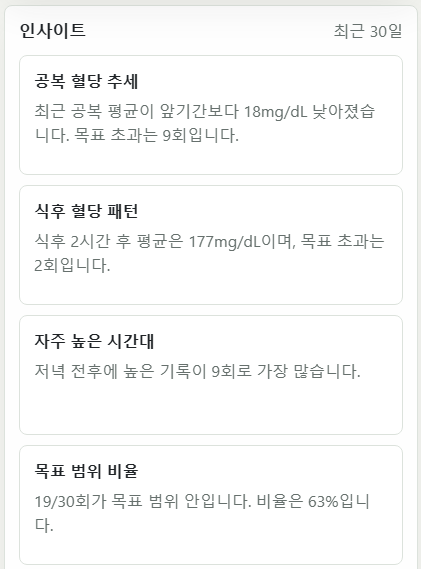

1. 오늘의 혈당 체크 현황  하루 동안 필요한 혈당 측정 항목을 체크리스트 형태로 확인할 수 있는 화면입니다. 아침 공복, 아침 식후 2시간, 점심 공복, 점심 식후 2시간, 저녁 공복, 저녁 식후 2시간 기록 여부를 확인할 수 있습니다.
2. 대시보드  혈당 수치를 직접 입력하고 측정 정보를 함께 저장하는 화면입니다. 혈당 수치는 mg/dL 단위로 입력하며, 측정 일시를 선택할 수 있습니다. 아침, 점심, 저녁 중 식사 시간을 선택하고, 공복 또는 식후 2시간 후 측정인지 구분할 수 있습니다. 식사 메모, 운동 여부, 약 복용 여부, 컨디션이나 수면, 스트레스 등 추가 메모도 함께 기록할 수 있습니다. 입력한 정보는 혈당 기록, 그래프, 인사이트 분석에 반영됩니다.
3. 혈당 기록 목록  최근 혈당 기록을 카드 형태로 확인할 수 있는 화면입니다. 각 기록에는 혈당 수치, 측정 시간, 식사 구분, 공복/식후 여부, 운동 여부, 약 복용 여부가 함께 표시됩니다. 상단 필터를 이용해 최근 30일 기록을 보거나, 전체 기록 중 원하는 조건의 기록만 확인할 수 있습니다. 각 기록 오른쪽의 수정 버튼과 삭제 버튼을 통해 기존 기록을 편집하거나 삭제할 수 있습니다.
4. 혈당 변화 그래프  주간/월간 단위로 혈당 변화를 한눈에 확인할 수 있는 화면입니다. 공복 혈당과 식후 2시간 후 혈당이 서로 다른 색상으로 표시되며, 날짜별 변화 추이를 쉽게 비교할 수 있습니다. 그래프의 점을 선택하면 해당 날짜의 혈당 수치, 측정 횟수, 최근 측정 변화량을 확인할 수 있습니다. 점선 기준선은 목표 혈당 범위를 나타내며, 기록된 혈당이 목표 범위 안에 있는지 빠르게 파악할 수 있습니다.
5. 혈당 분석 인사이트  최근 30일간 입력한 혈당 기록을 바탕으로 주요 패턴을 요약해서 보여주는 화면입니다. 공복 혈당 추세, 식후 혈당 패턴, 혈당이 자주 높게 나타나는 시간대, 목표 범위 비율 등을 확인할 수 있습니다.